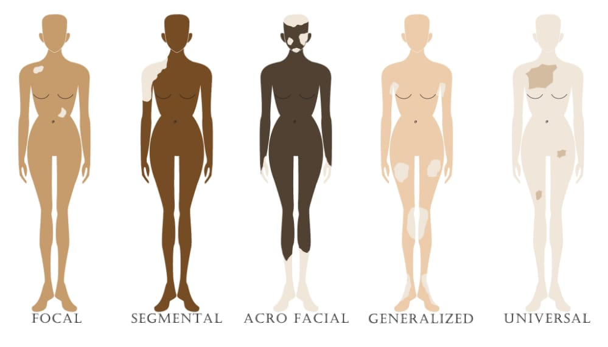

What is Vitiligo?
Vitiligo is a condition in which one’s skin loses melanin, the pigment that determines the color of your skin, hair and eyes. When the cells that produce melanin die or no longer form melanin, white patches of irregular shapes appear on your skin. Vitiligo usually starts as small areas of pigment loss that spread and become larger with time.
What causes Vitiligo?
Although the causes of vitiligo aren’t completely understood, there are a number of different theories:
Autoimmune disorder:
The affected person’s immune system may develop antibodies that destroy melanocytes.
Genetic factors:
Certain factors that may increase the chance of getting vitiligo can be inherited. About 30% of vitiligo cases run in families.
Neurogenic factors:
A substance that is toxic to melanocytes may be released at nerve endings in the skin.
Self-destruction:
A defect in the melanocytes causes them to destroy themselves.
Stress, trauma, allergy and sunburn
Who can get vitiligo?
Vitiligo affect people of all ages, gender and race.
Myths About Vitiligo
There are beliefs (which are not facts) that vitiligo is caused by:
- Sacrifice of twins.
- Eating some body parts belonging to twins.
- Burnt by twins
- Leprosy
- HIV/AIDS
Problems Associated with Vitiligo
- Because they lack melanocytes, macules are more sensitive to sunlight than the rest of the skin, so they will burn rather than tan.
- People with vitiligo may have some abnormalities in their retinas (the inner layer of the eye that contains light-sensitive cells) and some variation of color in their irises (the colored part of the eye). In some cases, there is some inflammation of the retina or iris, but vision is usually not affected.
- People with vitiligo may be more likely to get other autoimmune diseases (in which the body’s immune system causes it to attack itself), such as athritis,hypothyroidism, diabetes, pernicious anemia, Addison’s disease, and alopecia areata. Also, people with autoimmune diseases are more at risk for developing vitiligo.
- People with vitiligo may feel embarrassed or anxious about their skin. Sometimes people are rude – they may stare or say unkind things. This could cause a person with vitiligo to develop low self-esteem. This in turn could create anxiety or issues and make someone want to isolate. If this happens, you should talk to your healthcare provider or your family and friends to help you find a solution.
- Stigmatization from peers and self-inflicted stigma
- Isolation, discrimination
How is vitiligo treated?
There is no cure for vitiligo. The goal of medical treatment is to create a uniform skin tone by either restoring color (repigmentation) or eliminating the remaining color (depigmentation). Common treatments include camouflage therapy, repigmentation therapy, light therapy and surgery. Counseling is also very much recommended.
Methods of treatment
Camouflage therapy:
Using sunscreen with an SPF of 30 or higher. Also, the sunscreen should shield ultraviolet B light and ultraviolet A light (UVB and UVA). Use of sunscreens minimizes tanning, thereby limiting the contrast between affected and normal skin.
Makeups (cosmetics) help camouflage depigmented areas.
Hair dyes if vitiligo affects the hair.
Depigmentation therapy with the drug monobenzone can be used if the disease is extensive. This medication is applied to pigmented patches of skin and will turn them white to match the areas of vitiligo
Repigmentation therapy:
Corticosteroids can be taken orally (as a pill) or topically (as a cream put on the skin). Results may take up to 3 months.
Topical vitamin D analogs.
Topical immunomodulators such as calcineurin inhibitors.
Light Therapy
Narrow band ultraviolet B (NB-UVB) requires two to three treatment sessions per week for several months.
Excimer lasers emits a wavelength of ultraviolet light close to that of narrow band UVB. This is better for patients who do not have widespread or large lesions since it is delivered to small, targeted areas.
Combining oral psoralen and UVA (PUVA) is used to treat large areas of skin with vitiligo. This treatment is said to be very effective for people with vitiligo in the areas of the head, neck, trunk, upper arms and legs.
Surgery
Skin grafts: Skin is taken from one part of the patient and used to cover another part. Possible complications include scarring, infection or a failure to repigment. This might also be called mini grafting
Micropigmentation: A type of tattooing that is usually applied to the lips of people affected by vitiligo.
Counseling
Vitiligo can cause psychological distress and has the ability to affect a person’s outlook and social interactions. If this happens, your caregiver may suggest that you find a counselor or attend a support group.
Types of Vitiligo
Generalized vitiligo:
The most common pattern, wide and randomly distributed areas of depigmentation.
Universal vitiligo:
Pigmentation encompasses most of the body.
Focal vitiligo:
One or a few scattered macules in one area; most common in children
Acrofacial vitiligo:
Fingers and Periorificial areas
Mucosal vitiligo:
Pigmentation of only the mucous membranes

Counseling
Vitiligo can cause psychological distress and has the ability to affect a person's outlook and social interactions. If such skin loss happens to you, it is advised that you seek a dermatologist, a counsellor and also look out for a vitiligo support group available in your community or come to our VAU offices at Plot 21, Kira Road, Kamwokya.